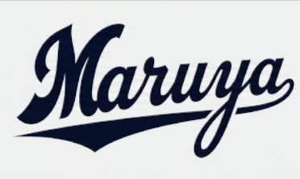
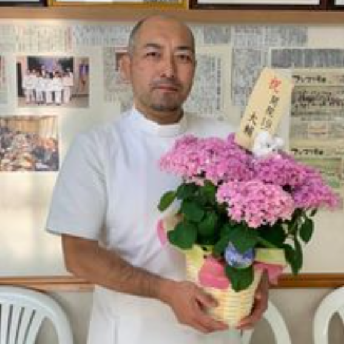

院長・渡辺 将が中心となり、捻挫や打撲、肉離れ、骨折、脱臼といった外傷の施術を行っています。スポーツによるケガの来院も多く、各種健康保険・交通事故保険の取扱店です。開業以来、助産師監修のもとで産後ケアにも力を入れています。
捻挫・打撲・筋損傷（肉離れ）・骨折・脱臼に対応。スポーツでのケガも多数対応しています。
疲労回復やケガからの回復促進を目的とした酸素カプセルをご用意しています。
開業以来、助産師監修のもとで行っている産後ケアで、出産後のお身体をサポートします。